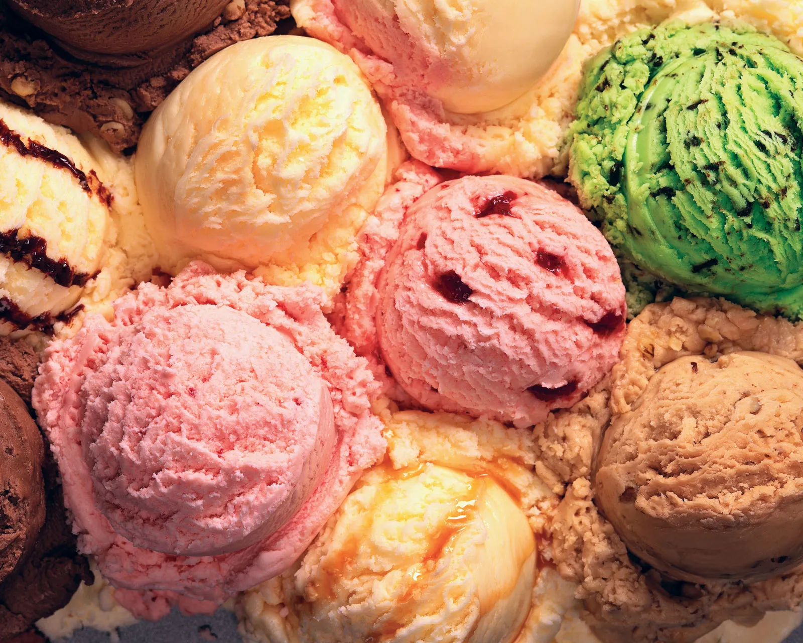

Velvety smooth homemade vanilla ice cream made with fresh cream, milk, and real vanilla. Cool, creamy, and refreshingly perfect on any day!
Vanilla Ice Cream is the most classic and universally loved frozen dessert in the world. Made with just a handful of simple ingredients — heavy cream, whole milk, sugar, egg yolks, and real vanilla bean or extract — it delivers a rich, smooth, custard-based flavour that is truly timeless. Whether scooped into a cone, served alongside warm brownies or pie, or enjoyed on its own, homemade vanilla ice cream is in a league of its own. The process is simple and the result is a silky, indulgent treat far superior to anything from a store.
In a saucepan, heat milk and heavy cream together over medium heat until it just begins to simmer. Do not boil. Stir in vanilla extract or scrape in vanilla bean seeds.
In a bowl, whisk egg yolks and sugar together vigorously until pale and slightly thick.
Slowly pour the warm cream mixture into the egg yolk mixture a little at a time, whisking constantly to temper the eggs (prevent scrambling).
Return the custard mixture to the saucepan and cook over low heat, stirring constantly, until it thickens enough to coat the back of a spoon (about 5–7 minutes).
Strain the custard through a fine sieve into a clean bowl. Let it cool to room temperature, then refrigerate for at least 2 hours until completely cold.
Churn in an ice cream machine per instructions, or pour into a container and freeze for 4–6 hours, stirring every hour to break up ice crystals. Scoop and serve!